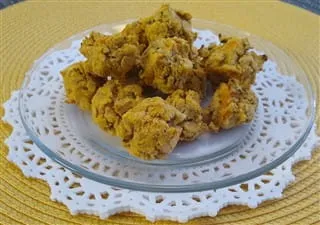

Sweet Potato Puffs
Description
Sweet Potato Puffs are a healthy, easy to make treat for your pomeranian at home. This recipe was found on the PetPom website.
The PetPom Website offers many tips, tricks and other recipes for raising Pomeranians. They suggest using these as a teething biscuit for younger poms.
Ingredients:
- 1 cup rice flour
- 1/4 cup coconut flour
- 1/4 cup all-natural applesauce
- 1/4 cup diced canteloupe
- 1/2 banana, mashed
- 3/4 cup sweet potato, cooked and mashed
- 1 cup finely diced zucchini
- 1 cup water, divided
Steps
- Preheat the oven to 350 F
- Line a cookie sheet with parchment paper
- In a mixing bowl, combine all ingredients plus 1/2 cup of the water. Use your hands to mix if needed.
- Add 1/8 cup of water as needed until the mixture just begins to stick together.
- Gently scoop a small ball of the dough and place on the cookie sheet. Space the scoops about 1-2 inches apart.
- Bake for 25 to 30 minutes until the puffs start to look slightly browned.
- Allow the puffs to cool down before sharing with your pet pom!
Home